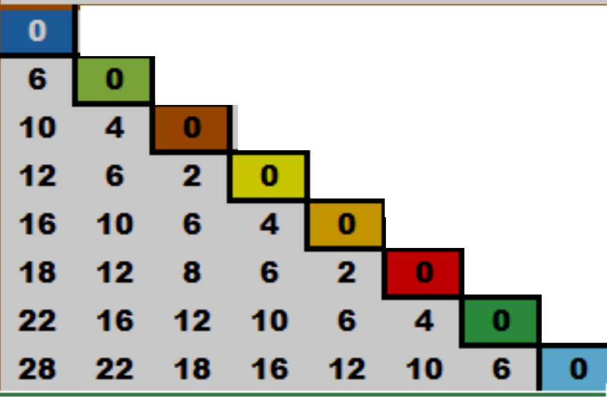
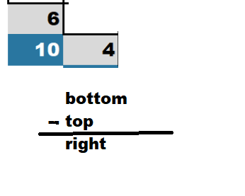

Using EXCEL files to look for primes by color coding cells based on there value. The chart shows several items.
The yellow cells are highlighted if the value is zero (0). These values are the result of the mod() function. Column C is tested against row 3.
This yellow color implies there is a factor for the column C value.
Look at row 10 ; the value of 7.
The columns E thru I all have a value greater than 0.
Column D is the value of 1 , the mod() function will always yield 0.
The diagonal line on the right is the same value as the value in column C.
This is the last cell that the mod() function is applied to , all white cells to the right have no calculations.
The multi colored cells in column C are prime suspects (ps) - possible primes.
The gray stair step cells are the integer value of the square root of column C. The format is set to zero decimal places. Column B is that calculated value and the gray cells represent that value .
This is a larger view of data. It appears as if there are patterns in he data , this is the 1000 ft view.
First , all the even numbers have been eliminated ; only odd digits remain in column D.
Next , additional values and data have been added.
A new column C has been inserted. This is a list of only prime numbers. A non prime value like 49 , 77 , and 91 are missing.
Second , for values such as 49 , 77 , and 91 the color from column D is applied to the cell where the mod() is 0.
This is an easy color flag to see non prime numbers ; and where its factors are located.
View this chart in "view big" mode and scroll around to the flags and data.
Finally , in column A the (g) value has been added. Take the number in column D and return the integer of [ps/30].
This is a larger view of the data , note the colored cells where factors are flagged.
Here are the equations and color codes to paint ps (prime suspects) and any factors.
Next , the values to the right of the gray cells have been eliminated. Since the first factor found is enough evidence to disqualify a ps as a non prime number.
Just a bigger view of the data.
Follow the gray cells ; the square root. Can you visualize a pattern?
There is a wave pushing downward.
The box highlights the area around the wave.
Additional patterns.
A close up of the wave.
Additional patterns.
Additional patterns.
The attached chart shows the results of the mod() function:
=mod(left col,top row)
Both the top row and the left side column are:
{ 1 , 7 , 11 , 13 , 17 , 19 , 23 , 29 , . . . }.
And each next (g) is designated by the red box.
Each red box is thirty away from the prior box.
The painted cells inside the diagonal are factors. If the mod() function is 0 (zero) then there are factors.
The diagonal line is the square of the ps row and column when the two values are equal.
In the attached look for the value of 13 under the ps column.
Testing against the top row for 1 , 7 , 11 , 13 with the mod function shows there are no factors except 1 and 13.
The actual formula for one cell is: =MOD($C$8,E7)
TOP ROW 01 07 11 13 17 19 23 29
13 COL 00 06 02 00 13 13 13 13
Let's look closely at three consecutive (g)s that are painted gray ; (g)2 , (g)3 and (g)4.
Look inside the red boxes ; below the diagonal line is a repeating sequence of values.

As the (g) increases , this repeating array of values forms a wave to push the next (g).
On the next screen will be a closer view.
The painted cells are the next focus.
The gray box and the gray triangle are highlighted , this is the push to create the next (g).
In the large upper box , the area below the diagonal ; the difference between each cell is thirty. Hence the note "subtract 30 below the boxes" - the boxed cells.
In the large lower box . the area above the diagonal ; the difference between each cell is thirty. Hence the note "add 30 above the boxes to make the next down" - the boxed cells.
This is a close up of the transation from (g)2 to (g)3. There are several key pieces of information.
In first column of each red box , the values are one less than the *fam.
Zero (0) is one less than *fam01 ; six (6) is one less than *fam07 , and on . . .
Look at the colored key on the right side ; there are the two groups of R and L.
In the R is { 0 , 6 , 12 , 18 } ; each six away from the prior.
The L is { 10 , 16 , 22 , 28 } ; again six away.
In first column the difference is:
{ 6 , 4 , 2 , 4 , 2 , 4 , 6 }
In the second column the difference is:
{ 4 , 2 , 4 , 2 , 4 ,6 }
The third column the difference is:
{ 2 , 4 , 2 , 4 , 6 }
The fourth column the difference is:
{ 4 , 2 , 4 , 6 }
The fifth is:
{ 2 , 4 , 6 }
The sixth is:
{ 4 , 6}
The seventh is:
{ 6 }
-------------------------------------
Taking the bottom row of
{ 28 , 22 , 18 , 16 , 12 , 10 , 6 , 0 }
The bottom row difference from left to right is:
{ 6 , 4 , 2 , 4 , 2 , 4 , 6 }
Difference second row from bottom is:
{ 6 , 4 , 2 , 4 , 2 , 4 }
Difference third row from bottom is:
{ 6 , 4 , 2 , 4 , 2}
Difference four from bottom is:
{ 6 , 4 , 2 , 4 }
Difference , five from bottom is:
{ 6 , 4 , 2 }
Difference six rows from bottom is:
{ 6 , 4 }
Difference seven rows from bottom is:
{ 6 }
The key is the symmetry both differences are the same values up-down or left-right.
One digit disappears , the same digit value for both.
-------------------------------------
The column starts as a difference:
{ 6 , 4 , 2 , 4 , 2 , 4 , 6 }
chop off one digit from the left.
The start of the bottom row is:
{ 6 , 4 , 2 , 4 , 2 , 4 , 6 }
chop off one digit from the right.
-------------------------------------
The gray painted cells in the diagonal makes a running sum for each row with a total of 28 at the bottom.
The running sum column on each level equals first column values going down from top to bottom.
-------------------------------------
Next , the value of blue cell (10) minus the cell above (6) makes the gray cell (4) to its right.

-------------------------------------Balance and symmetry
Scroll the left hand image side , look at each diagonal. Only one diagonal in each view is highlighted.
Each shows balance and symmetry across the diagonal.
The final math view for columns , the blue cell is the result of the left column minus the right column for any row.
The final math view for rows , the blue cell is the result of the lower row minus the upper row for any column.
Going back a few screens to where the diagonals were isolate by a darker font color , leads to the following.
Summing the diagonal leads to another balanced and symmetric diagonal. The colors are there just for convenience.
Notice the first and last diagonal both sum to 28.
The second and second to last both sum to 44.
Third and third to last both sum to 52.
Finally , the middle blue is 56.
One more test , the halves ;
28 to 44 is 16 ;
44 to 52 is 8 ;
52 to 56 is 4.
Half of 16 is 8 ; half of 8 is 4.
Why ?
Just a quick view of the triangle with R & L and *fam.
The focus has been on all the data below the zero value diagonal. The diagonal is the square of any number.
A look at the box above the focus (g) with the zeros. The math as listed below yields the first column inside the focus (g).
61-61=0
67-61=6
71-61=10
73-61=12
77-61=18
79-61=18
83-61=22
89-61=28
Index over one column to the right and down one ; 67 is now the focus.
67-67=0 , the value in the boxed cell.
Next ,
71-67=4
73-67=6
And , it goes on down the second column.
All the values in the focus(g) can be generated by subtracting numbers in the same column.
The zero diagonal and all the numbers below inside the focus (g) , can be generated by subtracting numbers from above the (g).
Just , index one right and one down.
Here is a clearer view of the math from the area above the focus (g).
This is true for any and all (g)'s. The values will change but the math is a constant.
The same process is true from the left of the focus (g).
To the left of the focus (g) the cells in the box , are subtracted from all the values below it to make the corresponding column inside the focus (g).
As the (g) grows to a larger (g) , it moves to the right and down one.
A look at the *fam's by (g). Since the definition of a (g) is the important piece of the argument. This and the following three screens show the *fam against the factors. Also the panels are paired to make 30.
There are many calculations in the array.
First , under the green cell labeled "prime" is the input for the array.
The cells in row 6 times column D makes the value in column E ;this is marked by the location of the blue cell.
The column AJ is a list of all the factors.
The number inside the blue cell is the (g).
Scroll the screen down to the lower panel , the input is 29.
Look at row 9 ; 2 times 29 is 58. the value in column E. Way to the right are the factors : { 1 , 2 ,29 , 58 }. The blue cell is the calculation of the (g).
To make the blue cell ; mod(58,30) = 28 , and int(58/30) = 1.
We know three pieces of information (g)1 and the reminder of 28 and the current row.
We can plot the blue cell and create the label.
Look at the next screen for *fam07 and *fam23 ; these make a pair.
The two inputs are 7 (*fam07) and 23 (*fam23) which sum to 30.
When the two *fam equal 30 ; they called *pair.
The most noticeable attribute is how the blue cells flow opposite each other. The are symmetric up to down ; left to right ; and on diagonals.
Go back one screen look at *fam01 and *fam29 , two opposing diagonals and symmetric top to bottom and left to right.
On this screen these are similar but smaller diagonals.
As the
As the (g) grows to a larger (g) , it moves to the right and down one.